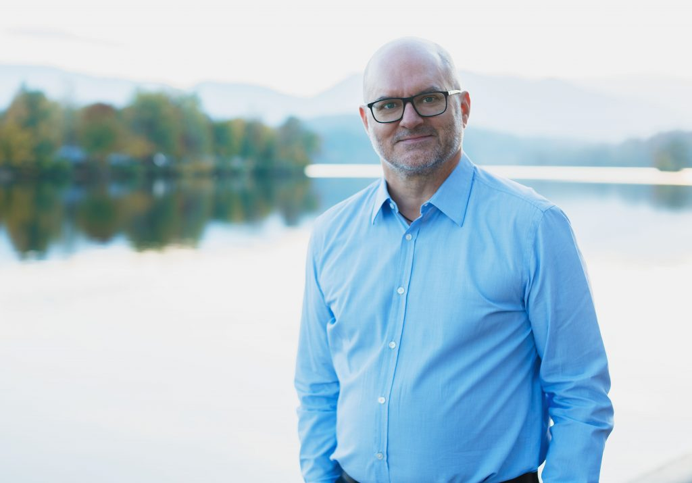

naturalconsult
Thomas Jäger
Agile Coach · Facilitator · Organisationsentwickler
Ich begleite Teams und Führungskräfte dabei, besser zusammenzuarbeiten – in echten Veränderungsprozessen, nicht im Projektplan. Als Agile Coach und Facilitator bringe ich Struktur in komplexe Situationen, ohne das Wesentliche zu vereinfachen.
Gespräch vereinbaren